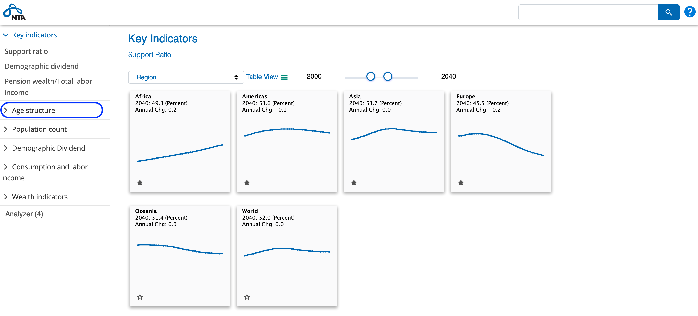
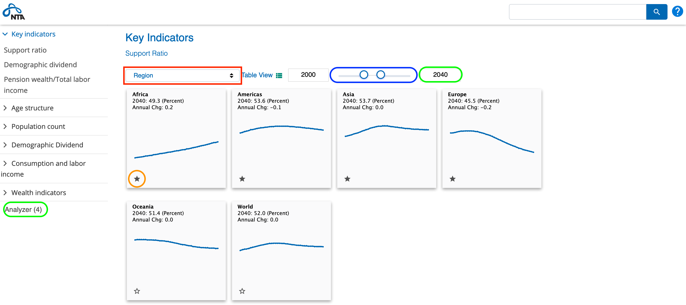
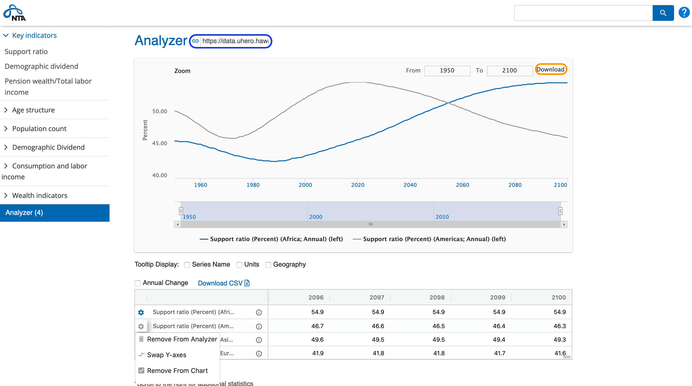
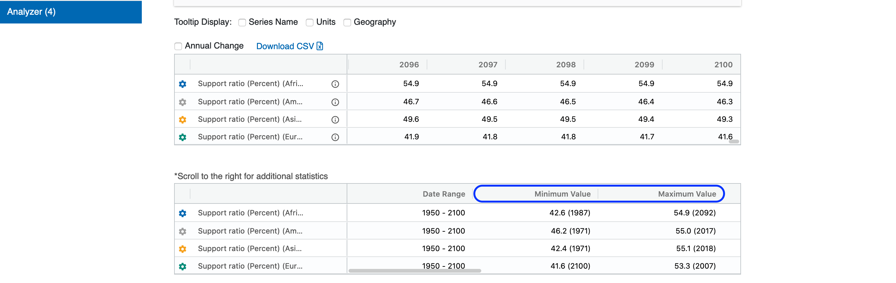

The Data Portal has three basic view modes: Chart View, Table View and Series View. By default, the Data Portal loads the "Key Indicators" in Chart View.
In the menu on the left side of the screen you can select from different categories of data to display. For example, selecting Age Structure will load the Support Ratio data, as well as, a list of additional related categories.
In any view mode, at the top of the page is a selector for the measurements by which the data can be viewed by. In the screen shot above, the measurement is set to "Region". Using the pull-down you can view the series by Region(s), Income Group(s), or All Countries. Next to the measurement selector is a toggle to switch to Table View (more on that below). The sample period displayed can be adjusted using the starting and ending period sliders, or you can click in the date boxes on either side of the sliders to type your desired starting or ending period.
In the upper left corner of each chart you will find the name of the indicator displayed, the date of the last value in the chart (with units in parentheses), and the annual change. For example, in the screen shot above, the first chart plots Africa's support ratio, the last available data point in the date range selected is from 2040 with a value 49.3 and the series is measured in percents (Precent). Hovering your mouse cursor over a series will display values at different points in time. In the bottom left corner of each chart is a star. When selected, the star outline is filled solid and the indicator is added to the Analyzer used for grouping and comparing multiple indicators. The Analyzer is described in detail below.
From Chart View, you can toggle to a Table View of the currently displayed indicators using the icon to the right of the measurement selector.
In Table View, in addition to the selectors described above, there are toggles for switching back to chart view and to display annual change. You can change your sample size using the same controls available in Chart View. If the sample selected is too large to fit on the screen, you can scroll the table horizontally to display the remaining observations. (Note that in some browsers the horizontal scroll bar is hidden until you actually begin scrolling.) The Download CSV link saves a Comma Separated Values formatted file of the table to your downloads folder. A CSV file easily loads in Excel or other software programs. Any indicator in the table can be added to the Analyzer by selecting the Analyzer star, located to the right of the name of each indicator. Selecting the information icon next to the star pops up a box with more information about the selected indidator including a description and source links.
To view a chart of a single series in Series View click on the series name, or any of the individual charts while in Chart View. The Series View plots a single series using a line measured on the right axis and the annual change displayed as bars measured on the left axis.
Header controls: At the top of the chart, there is a drop down to view the series for other regions/income groups, depending on the measurement that was selected in the Chart or Table View. In the example above, you can switch from Africa's Support Ratio to either Americas, Asia, Europe, Oceania, or World. These are the available series under the Region measurement which is the default selected measurement of the Chart and Table Views. The link button next to the frequency selector copies a static URL for the current chart. This URL can be bookmarked, shared or otherwise used to reproduce the chart as it appears on the screen. As in each of the other views, to add an indicator to the Analyzer, toggle the star, located at the top of the chart following the indicator name.
Sample selection: There are multiple controls for setting the range of the data viewed. There are the familiar date boxes in the upper right corner of the chart. In the top-left corner of the chart are links to zoom the displayed sample to the last year, the last five years, the last ten years, or all available data. The spark line below the main chart displays the entire range of data and has sliders to select any part of the full sample.
Export: In the top-right corner of the chart area, click Download to choose from PNG, JPEG, SVG, PDF or CSV exports of the selected data.
Information and data view: Below the chart is the source of the data, a link to the source agency, and any relevant notes followed by a row of summary statistics measured over the currently selected range and a table displaying the data with the option of sorting by date either ascending or descending.
In the previous two screen shots, we added Hawaii County Non-farm jobs and the Honolulu Core CPI Inflation rate to the Analyzer. Click on Analyzer(2) at the bottom of the left-hand menu. The number in the parentheses indicates the number of series you have starred.
The Analyzer plots the starred series together in one graph and autmatically choses whether to use a two-scale or single-scale graph depending on the units of the indicators. For example, in the screen shot above, the inflation rate is plotted on the right axis in percent, and non-farm jobs are plotted on the left axis measured in thousands of jobs. If you have added (starred) more than two indicators, Analyzer plots only the first two indicators and lists all of the starred indicators in the table immediately below the chart in the order they were starred.
Analyzer Chart Controls: The analyzer chart has all of the same controls discussed above for Series View, with the exception of region, frequency, and seasonal adjustment selectors. Those are not available because they are determined for each indicator when added to the Analyzer. New chart controls include three selectors at the bottom to toggle tool tips for Series Name, Units, and Geography. The screen shot above shows the mouse hover over at 2005Q2 with the Units and Geography tool tips toggled on.
Additional control over the indicators displayed in the chart is available using the gear icons next to each indicator name in the data table directly below the chart. As long as you have added at least two indicators to the Analyzer, clicking the gear icon gives you the options to Removing from Analyzer (the trashcan), Swap Y-axes, or Remove from Chart as shown in the screen shot below. If you have more than two indicators in your Analyzer list, the gear icon for indicators not currently displayed will offer an Add to Chart check box.
Switching Axis: If all of your selected series use the same units and similar scale, the Switch Y-Axis option will toggle between displaying the data with a single y-axis, versus two separate y-axes (left and right). Otherwise, the option swaps the axis on which the indicators are measured. The legend below the chart indicates which axis each series is plotted on. You may choose to display as many series as you wish, but of course there are only two y-axes, so it is possible to create graphs that are not very useful for series with very different orders of magnitude.
Export and Saving: For any Analyzer screen, you can select the link above the chart next to the Analyzer title to copy a static URL that can be bookmarked, shared, and otherwise used to link back to the current view and settings of the Analyzer. As in the Series View described above, the Download link in the top right corner of the chart will present an option to download the Analyzer chart as a PNG, JPEG, SVG, PDF or CSV file.
Data Table: The data table below the Analyzer chart has the same features as the tables in Table View.
Summary Stats: Below the data table is a group of summary statistics for each indicator over the date range selected. Statistics inclued the minimum and maximum values over the sample, and by scrolling to the right, the percentage or absolute change in the indicator from start to end of the sample, and the total (sum), average value, and Compound Annual Growth Rate (CAGR) over the selected sample.
Type a keyword into the search box at the top right-hand corner of each page to see a list of all series with that keyword in the series title or in the name of the series category.
Suggested citation: NTA Network (2017) NTA Indicators accessed on [date], www.ntaccounts.org.
These NTA indicators quantify the direct effect of changes in population size and age structure on selected macroeconomic measures. The indicators are constructed combining population projections with age profiles of consumption and labor income for 181 countries. The age profiles of economic variables are held constant over the simulation and, hence, all changes are due to shifts in the number of people at each age.
The consumption and labor income profiles are constructed following the methods described in Lee and Mason (2011) and UN (2013). Labor income by age includes earnings and an estimate of the value of work by the self-employed and unpaid family workers. It incorporates age variation in labor force participation, hours worked, unemployment, and wages. Consumption includes all public and private consumption allocated to individuals and the age groups to which they belong. Estimates of the NTA age profiles are currently available for approximately 60 countries. The age profiles for other countries were constructed using methods described in Mason, Lee, et al (2017).
All age profiles have been estimated for a recent year in the local currency of the country in question. Values were deflated (inflated) to 2010 and then converted to 2010 PPP dollars using deflators and exchange rates from the World Bank Development Indicators.
Values for regional groups and income groups were constructed from the 181 country sample. Counts and monetary values are summed over the countries within each group. These are then used to calculate country group estimates of indicator ratios and growth rates.
Population estimates and projections by single year of age from 1950 to 2100 are taken from the United Nations World Population Prospects 2017, medium variant.
Changes and percentage changes in the indicators are all centered five-year moving averages.
Effective consumers: Sum of population of each age weighted by the per capita age profile of consumption normalized on the average consumption of persons 30-49 years of age.
Effective workers: Sum of population of each age weighted by the per capita age profile of labor income normalized on the average labor income of persons 30-49 years of age.
Support ratio: Effective workers as a percentage of Effective consumers; calculated using labor income and consumption profiles normalized on the mean, over ages 30-49, of labor income and consumption respectively.
Support ratio (alternative): Labor income as a percentage of consumption; calculated using labor income and consumption profiles normalized on the mean, over ages 30-49, of labor income.
Consumer-worker ratios: Effective number of consumers in broad age groups as a percentage of effective number of workers of all ages.
Mean ages of consumption, labor income: Central ages of aggregate consumption and aggregate labor income.
Longitudinal support ratios: Present value of prospective lifetime effective years of working as a percent of the present of prospective lifetime effective years of consuming.
Deficit ratios: Gap between consumption and labor income as a percentage of total labor income.
Consumption is computed as the product of the per capita consumption at each age and the estimated or projected population of that age. The base year for the age profile is 2010 and it is assumed to shift by 1.5 percent per year.
Labor income is computed as the product of the per capita labor income at each age and the estimated or projected population of that age. The base year for the age profile is 2010 and it is assumed to shift by 1.5 percent per year.
Present value of consumption at age x in year t is calculated as the present value of consumption to members of the population cohort of age x in year t over the remainder of the cohorts existence. A discount rate of 3 percent (real) is used to calculate the present value.
Present value of labor income at age x in year t is calculated as the present value of labor income to members of the population cohort of age x in year t over the remainder of the cohorts existence. A discount rate of 3 percent (real) is used to calculate the present value.
Lifecycle wealth at age x in year t is calculated as the present value of consumption at age x in year t less the present value of labor income at age x in year t.
Pre-retirement phase and older includes the final two phases of the lifecycle (pre-retirement and retirement). The lifecycle wealth of these age groups is approximately equal to the lifecycle wealth required to fund the old-age deficit, i.e., the gap between consumption and labor income at older ages.
Pension wealth is the lifecycle wealth of all persons in the pre-retirement and retirement phases of the lifecycle.
Ronald Lee and Andrew Mason, lead authors and editors, 2011. Population Aging and the Generational Economy: A Global Perspective (Cheltenham, UK and Northampton, MA: Edward Elgar).
Andrew Mason and Ronald Lee 2017 "Intergenerational Transfers and the Older Population" Workshop on Future Directions for the Demography of Aging, National Academy of Sciences, Washington, DC, August 17-18.
Andrew Mason, Ronald Lee, Michael Abrigo, and Sang-Hyop Lee 2017 “Support Ratios and Demographic Dividends: Estimates for the World” United Nations Department of Economic and Social Affairs, Population Division, Technical Paper No. 2017/1. http://www.un.org/en/development/desa/population/publications/technical/index.shtml
United Nations, Department of Economic and Social Affairs, Population Division, 2013 National Transfer Accounts Manual: Measuring and Analyzing the Generational Economy (New York, NY, United Nations).